Report List¶
The Report List page allows user to
|
|
Browse Reports¶
In browser, log in to Izenda as a user with Report permission.
Click Reports.
The reports are listed in their respective categories and sub-categories.
Select REPORTS or TEMPLATES to view reports of this type.
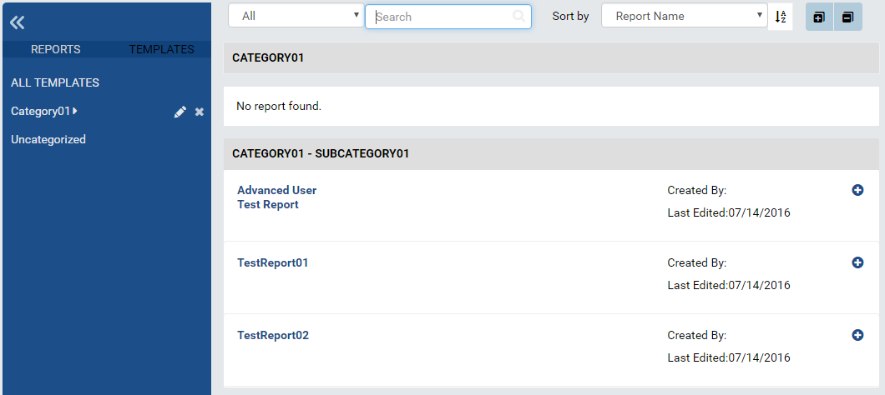Fig. 324 Report List
Click the plus icon on the right to view report properties.
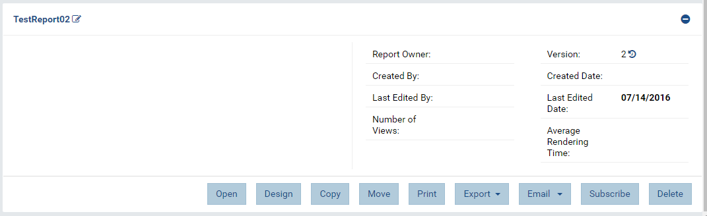Fig. 325 Report Properties in Report List
The buttons at the bottom allow user to Open (in Report Viewer), Design, Copy or Move to another name or category, Print or Export to another format, add Subscriptions, or Detele the report.
{kind=link}
{kind=link}
View Report History¶
Click the history icon (similar to ↺) next to version number to open Report History pop-up.
The report versions together with modified date and user are displayed with the most current one on top.
There are shortcuts for the current version to be opened in Report Designer, copied and moved, or deleted.
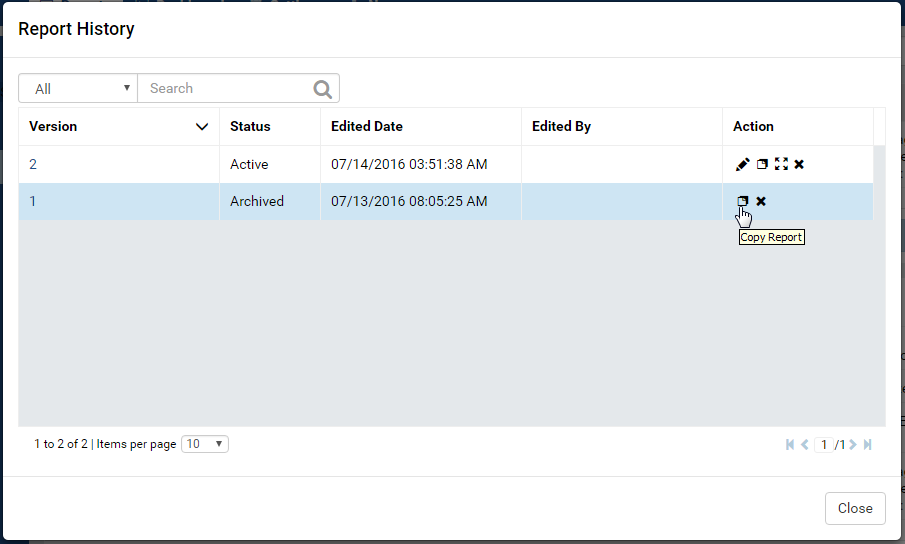Fig. 326 Report History
The previous versions can be removed if no longer needed, or copied to another name or category then used in addition to the current version.
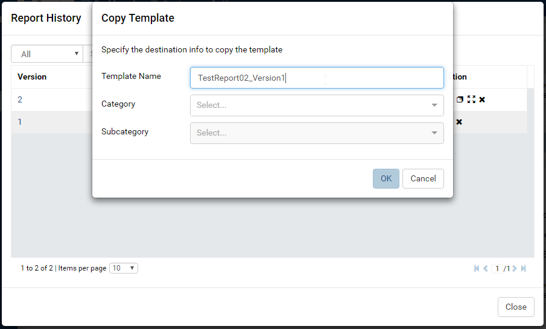Fig. 327 Report History - Copy Version
{kind=link}
{kind=link}
Search for Reports¶
The Search box at the top allows user to search for specific reports.
- 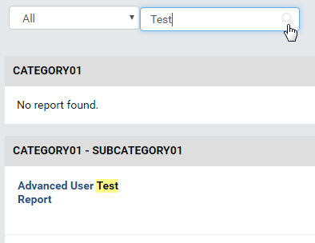
Fig. 328 Report List -Search
Select a specific element to search for in the dropdown on the left of the Search box. Default is All.
Type a partial name and click the search icon (🔍).
The matching reports will be displayed.
{kind=link}
Rename Report Categories¶
- 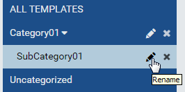
Fig. 329 Report List - Rename Category
Click the pencil icon to rename a report category.
- 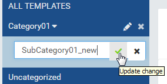
Fig. 330 Report List - Confirmation New Category Name
Enter the name in place and click the check icon to save.
- 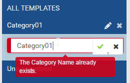
Fig. 331 Report List - Duplicated New Category Name
The new name will be checked for duplication with existing categories.
{kind=link}
{kind=link}
{kind=link}
Copy a Report¶
{kind=link}
Fig. 332 Report Copy Pop-up
The Copy function allows user to copy a report to a new name and/or a new category and sub-category. leaving the original report intact.
- Click the Copy button to open Copy Report pop-up.
- Enter a new name for the report if changing the name.
- Enter or select a new category and sub-category if needed.
- The report name in will be checked for duplication in the destination category.
- Click OK to close the pop-up and perform the copy.
Move a Report¶
{kind=link}
Fig. 333 Report Move Pop-up
The Move function allows user to move a report to a new category and sub-category, optionally changing the name in the process.
- Click the Move button to open Move Report pop-up.
- Enter a new name for the report if changing the name.
- Enter or select a new category and sub-category.
- The report name in will be checked for duplication in the destination category.
- Click OK to close the pop-up and perform the move.
Add Report Subscriptions for Current User¶
Click the Subscribe button to open Report Subscription pop-up.
The report’s current subscriptions are displayed with a summary of the schedule.
- 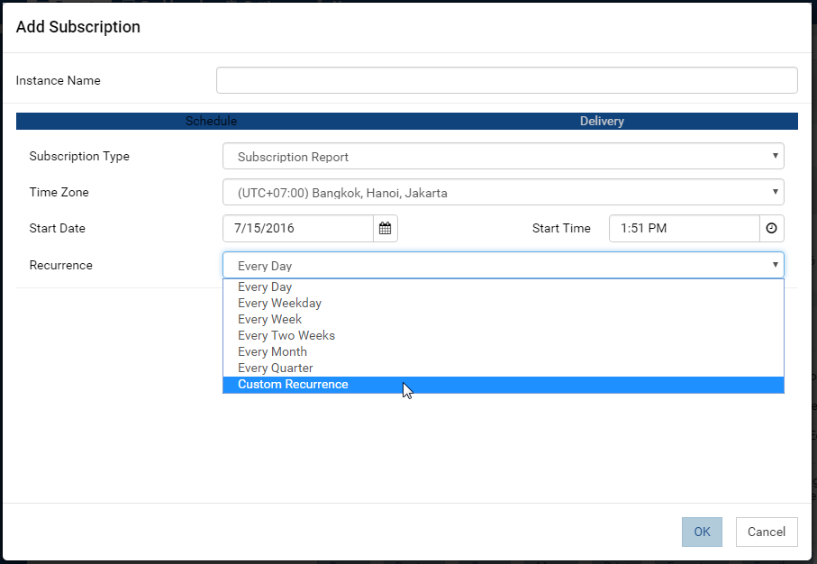
Fig. 334 Report Subscription Pop-up
Click Add Subscription button to open Add Subscription pop-up.
Enter a name for this subscription.
In Schedule tab:
- Select Subscription Type:
- Subscription Alert: deliver to current user only if it has data at scheduled time.
- Subscription Report: deliver to current user regardless whether it has data or not at scheduled time.
- Select a more suitable time zone than the default if needed.
- Select a start date in the future.
- Enter the start time (some common values can be quickly selected from the pre-defined list).
- Select a common recurrence period from the list, or select Custom Recurrence to define a different one.
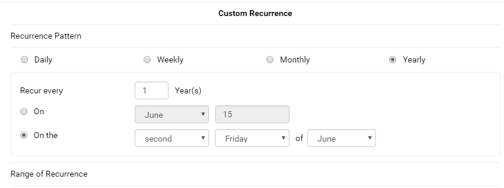Fig. 335 Report Subscription Recurrence Sample
- Select Subscription Type:
In Delivery tab, select:
- “Email” Delivery Type: send the subscription to the email address
of current user.
- Select Delivery Method: email a Link, email an Attachment, or email with Embedded HTML body.
- Customize the default template if necessary.
- “File Location” Delivery Type: save the subscription as a file.
- Delivery Method is Send to disk.
- Select the Export File Type: PDF, Word Doc, Excel or CSV.
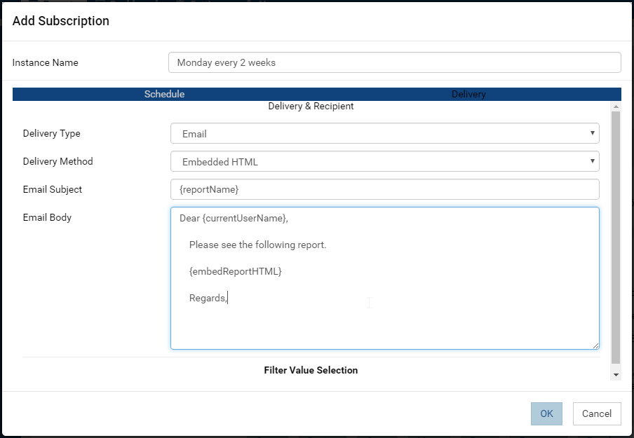Fig. 336 Report Subscription Delivery
- “Email” Delivery Type: send the subscription to the email address
of current user.
Click OK to close Add Subscription pop-up.
Click Save to close Report Subscription pop-up.
{kind=link}
{kind=link}
{kind=link}
Remove Report Subscriptions for Current User¶
- Click the Subscribe button to open Report Subscription pop-up.
- The report’s current subscriptions are displayed with a summary of the schedule.
- Click the Delete icon (x) to delete each subscription.
- Click Save to close Report Subscription pop-up.
To delete multiple subscriptions:
- Tick the checkboxes beside each one.
- Click the now enabled Delete icon at the bottom (that looks like a waste basket)
- Click Save to close Report Subscription pop-up.
{kind=link}
Fig. 337 Report Subscription Delete Multiple